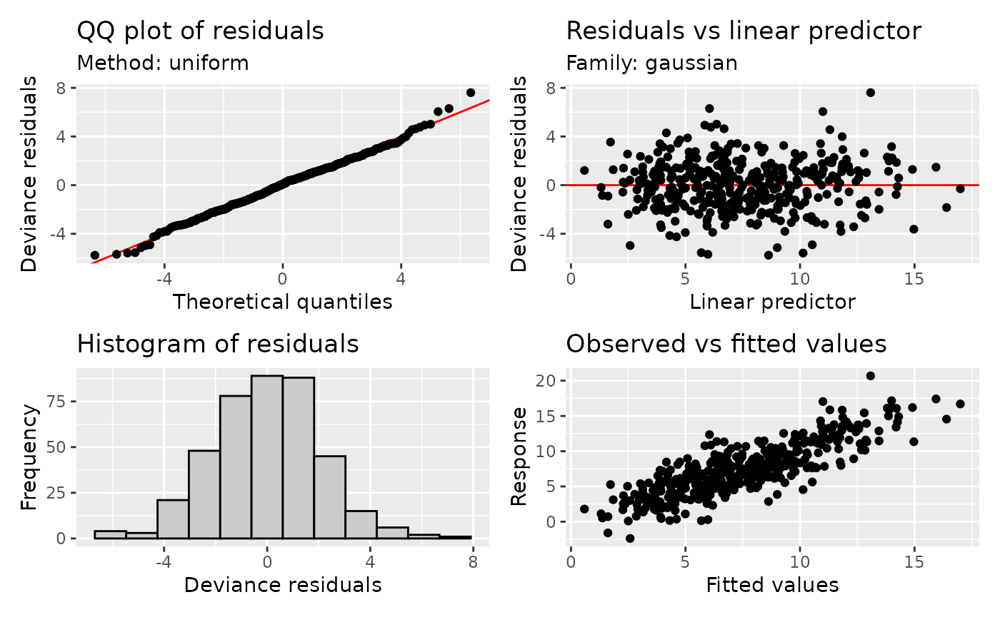

library("gratia")
library("mgcv")
#> Loading required package: nlme
#> This is mgcv 1.9-1. For overview type 'help("mgcv-package")'.gratia is a package to make working with generalized additive models (GAMs) in R easier, including producing plots of estimated smooths using the ggplot2 📦.
This introduction will cover some of the basic functionality of gratia to get you started. We’ll work with some classic simulated data often used to illustrate properties of GAMs
df <- data_sim("eg1", seed = 42)
df
#> # A tibble: 400 × 10
#> y x0 x1 x2 x3 f f0 f1 f2 f3
#> <dbl> <dbl> <dbl> <dbl> <dbl> <dbl> <dbl> <dbl> <dbl> <dbl>
#> 1 2.99 0.915 0.0227 0.909 0.402 1.62 0.529 1.05 0.0397 0
#> 2 4.70 0.937 0.513 0.900 0.432 3.25 0.393 2.79 0.0630 0
#> 3 13.9 0.286 0.631 0.192 0.664 13.5 1.57 3.53 8.41 0
#> 4 5.71 0.830 0.419 0.532 0.182 6.12 1.02 2.31 2.79 0
#> 5 7.63 0.642 0.879 0.522 0.838 10.4 1.80 5.80 2.76 0
#> 6 9.80 0.519 0.108 0.160 0.917 10.4 2.00 1.24 7.18 0
#> 7 10.4 0.737 0.980 0.520 0.798 11.3 1.47 7.10 2.75 0
#> 8 12.8 0.135 0.265 0.225 0.503 11.4 0.821 1.70 8.90 0
#> 9 13.8 0.657 0.0843 0.282 0.254 11.1 1.76 1.18 8.20 0
#> 10 7.51 0.705 0.386 0.504 0.667 6.50 1.60 2.16 2.74 0
#> # ℹ 390 more rowsand the following GAM
m <- gam(y ~ s(x0) + s(x1) + s(x2) + s(x3), data = df, method = "REML")
summary(m)
#>
#> Family: gaussian
#> Link function: identity
#>
#> Formula:
#> y ~ s(x0) + s(x1) + s(x2) + s(x3)
#>
#> Parametric coefficients:
#> Estimate Std. Error t value Pr(>|t|)
#> (Intercept) 7.4951 0.1051 71.35 <2e-16 ***
#> ---
#> Signif. codes: 0 '***' 0.001 '**' 0.01 '*' 0.05 '.' 0.1 ' ' 1
#>
#> Approximate significance of smooth terms:
#> edf Ref.df F p-value
#> s(x0) 3.425 4.244 8.828 8.78e-07 ***
#> s(x1) 3.221 4.003 67.501 < 2e-16 ***
#> s(x2) 7.905 8.685 67.766 < 2e-16 ***
#> s(x3) 1.885 2.359 2.642 0.0636 .
#> ---
#> Signif. codes: 0 '***' 0.001 '**' 0.01 '*' 0.05 '.' 0.1 ' ' 1
#>
#> R-sq.(adj) = 0.685 Deviance explained = 69.8%
#> -REML = 886.93 Scale est. = 4.4144 n = 400Plotting
gratia provides the draw() function to produce plots
using the ggplot2 📦. To draw the estimated smooths from the GAM we
fitted above, use
draw(m)This is intended as reasonable overview of the estimated model, but
it offers limited option to modify the resulting plot. If you want full
control, you can obtain the data used to create the plot above with
smooth_estimates()
sm <- smooth_estimates(m)
sm
#> # A tibble: 400 × 9
#> .smooth .type .by .estimate .se x0 x1 x2 x3
#> <chr> <chr> <chr> <dbl> <dbl> <dbl> <dbl> <dbl> <dbl>
#> 1 s(x0) TPRS NA -1.32 0.390 0.000239 NA NA NA
#> 2 s(x0) TPRS NA -1.24 0.365 0.0103 NA NA NA
#> 3 s(x0) TPRS NA -1.17 0.340 0.0204 NA NA NA
#> 4 s(x0) TPRS NA -1.09 0.318 0.0304 NA NA NA
#> 5 s(x0) TPRS NA -1.02 0.297 0.0405 NA NA NA
#> 6 s(x0) TPRS NA -0.947 0.279 0.0506 NA NA NA
#> 7 s(x0) TPRS NA -0.875 0.263 0.0606 NA NA NA
#> 8 s(x0) TPRS NA -0.803 0.249 0.0707 NA NA NA
#> 9 s(x0) TPRS NA -0.732 0.237 0.0807 NA NA NA
#> 10 s(x0) TPRS NA -0.662 0.228 0.0908 NA NA NA
#> # ℹ 390 more rowswhich will evaluate all smooths are unevenly spaced values over the
range of the covariate(s). If you want to evaluate only selected
smooths, you can specify which via the smooth argument.
This takes the smooth labels which are the names of the smooths
as they are known to mgcv. To list the labels for the smooths in use
smooths(m)
#> [1] "s(x0)" "s(x1)" "s(x2)" "s(x3)"To evaluate only \(f(x_2)\) use
sm <- smooth_estimates(m, smooth = "s(x2)")
#> Warning: The `smooth` argument of `smooth_estimates()` is deprecated as of gratia
#> 0.8.9.9.
#> ℹ Please use the `select` argument instead.
#> This warning is displayed once every 8 hours.
#> Call `lifecycle::last_lifecycle_warnings()` to see where this warning was
#> generated.
sm
#> # A tibble: 100 × 6
#> .smooth .type .by .estimate .se x2
#> <chr> <chr> <chr> <dbl> <dbl> <dbl>
#> 1 s(x2) TPRS NA -4.47 0.476 0.00359
#> 2 s(x2) TPRS NA -4.00 0.406 0.0136
#> 3 s(x2) TPRS NA -3.53 0.345 0.0237
#> 4 s(x2) TPRS NA -3.06 0.295 0.0338
#> 5 s(x2) TPRS NA -2.58 0.263 0.0438
#> 6 s(x2) TPRS NA -2.09 0.250 0.0539
#> 7 s(x2) TPRS NA -1.59 0.253 0.0639
#> 8 s(x2) TPRS NA -1.08 0.264 0.0740
#> 9 s(x2) TPRS NA -0.564 0.278 0.0841
#> 10 s(x2) TPRS NA -0.0364 0.289 0.0941
#> # ℹ 90 more rowsThen you can generate your own plot using the ggplot2 package, for example
library("ggplot2")
library("dplyr")
#>
#> Attaching package: 'dplyr'
#> The following object is masked from 'package:nlme':
#>
#> collapse
#> The following objects are masked from 'package:stats':
#>
#> filter, lag
#> The following objects are masked from 'package:base':
#>
#> intersect, setdiff, setequal, union
sm |>
add_confint() |>
ggplot(aes(y = .estimate, x = x2)) +
geom_ribbon(aes(ymin = .lower_ci, ymax = .upper_ci),
alpha = 0.2, fill = "forestgreen"
) +
geom_line(colour = "forestgreen", linewidth = 1.5) +
labs(
y = "Partial effect",
title = expression("Partial effect of" ~ f(x[2])),
x = expression(x[2])
)
Model diagnostics
The appraise() function provides standard diagnostic
plots for GAMs
appraise(m)
The plots produced are (from left-to-right, top-to-bottom),
- a quantile-quantile (QQ) plot of deviance residuals,
- a scatterplot of deviance residuals against the linear predictor,
- a histogram of deviance residuals, and
- a scatterplot of observed vs fitted values.
Adding partial residuals to the partial effect plots produced by
draw() can also help diagnose problems with the model, such
as oversmoothing
draw(m, residuals = TRUE)Want to learn more?
gratia is in very active development and an area of development that is currently lacking is documentation. To find out more about the package, look at the help pages for the package and look at the examples for more code to help you get going.